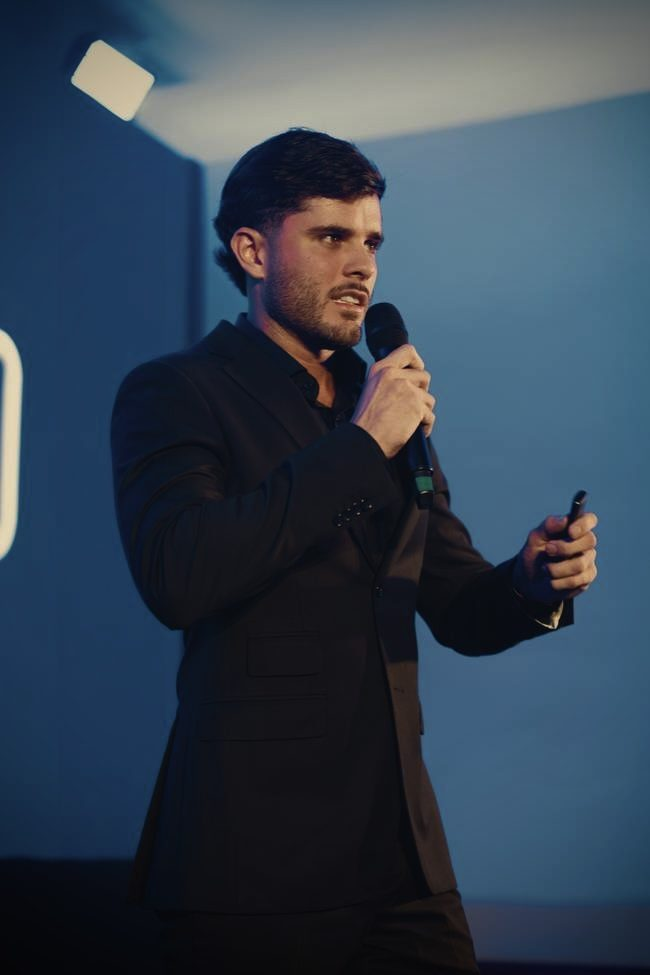

Como conseguir clientes para agência de marketing: prospecção, indicação e inbound que fecham
A parte que ninguém quer encarar: entregar resultado é só metade do jogo. A outra metade é encher o funil comercial da própria agência. Aqui estão os três canais que trazem cliente — e a ordem certa de montá-los.

Uma agência de marketing consegue cliente por três canais: indicação, prospecção ativa (outbound) e inbound (conteúdo e autoridade). A indicação é a que mais fecha e tem o menor custo, porque chega com confiança pronta — mas não escala sozinha. A prospecção ativa dá previsibilidade: você controla quantas reuniões marca por semana. O inbound atrai no médio prazo, quando a agência já tem autoridade construída. Agência madura roda os três ao mesmo tempo; agência nova começa por indicação e outbound, e vai plantando inbound no caminho.
Eu dirijo a LINCE Performance e fundei a Gene Company, e já vi muita agência boa fechar as portas não por entregar mal, mas por nunca ter resolvido como encher o próprio funil. Vou direto ao que funciona.
- Indicação: mais barata e que mais fecha — depende de resultado entregue e de pedir.
- Prospecção ativa: dá previsibilidade; funciona com nicho e personalização.
- Inbound: atrai no médio prazo via conteúdo e autoridade.
- A regra: comece por indicação + outbound, plante inbound desde já.
Por que a maioria das agências não tem funil comercial
A agência nasce de uma habilidade técnica: alguém sabe fazer tráfego, criativo ou marca. Os primeiros clientes vêm do boca a boca — um amigo, um ex-chefe, uma indicação. Isso funciona até parar de funcionar. Quando a carteira trava ou um cliente grande sai, a agência descobre que nunca construiu uma máquina de atrair cliente novo. Ela sabe vender o cliente do cliente, mas não sabe vender a si mesma.
Resolver isso é tratar a aquisição da própria agência como um projeto, com os mesmos canais, metas e processos que você vende lá fora. É irônico quantas agências fazem marketing excelente para terceiros e nenhum para si.
Canal 1: indicação — o que mais fecha (e como fazer render)
Indicação é o canal mais poderoso que existe para serviço, porque o lead chega com a confiança já resolvida. Alguém que ele respeita disse que você entrega. Segundo a Nielsen, em pesquisas globais sobre confiança em propaganda, a recomendação de pessoas conhecidas é consistentemente a forma de mensagem em que o consumidor mais confia. Num negócio de serviço, isso vale ouro.
O erro é tratar indicação como sorte. Ela vira sistema quando você:
- Entrega resultado documentado: sem resultado, ninguém arrisca o próprio nome indicando você. O combustível da indicação é o case.
- Pede de forma ativa: no momento em que o cliente está satisfeito (depois de um bom resultado), pergunte diretamente se ele conhece alguém com o mesmo problema. A maioria indica — só nunca foi perguntada.
- Facilita a passagem: dê ao cliente uma frase pronta ou um material curto que ele possa encaminhar. Quanto menos trabalho para ele, mais indicações acontecem.
- Cultiva a rede: parceiros que atendem o mesmo público sem competir (contador, designer, consultor) são fonte constante de indicação cruzada.
A fraqueza da indicação é que você não controla o volume. Ela vem quando vem. Por isso ela sustenta a agência, mas não dá para prever a receita só com ela — e é aí que entra o segundo canal.
Canal 2: prospecção ativa (outbound) — a previsibilidade
Prospecção ativa é você ir atrás do cliente, não esperar ele chegar. É o único canal em que você controla a entrada: se quer mais reuniões esta semana, você aborda mais gente certa. O problema é que a maioria faz errado — dispara mensagem genérica em massa e chama isso de prospecção. Isso é spam, e queima a marca.
Prospecção que funciona tem três pilares:
- Nicho definido: é impossível personalizar abordagem para "qualquer empresa". Escolha um segmento onde você tenha repertório — e-commerce de um setor, clínicas, negócios locais. Falar a língua do nicho muda tudo.
- Pesquisa antes do contato: olhe o Instagram, o site, os anúncios da empresa. Encontre um problema concreto — a landing page lenta, o criativo fraco, o anúncio sem oferta. É esse diagnóstico específico que abre a conversa.
- Oferta de diagnóstico, não de venda: o primeiro contato não vende contrato. Ele oferece uma análise rápida e gratuita do marketing da empresa. A meta é marcar uma reunião, não fechar na mensagem.
Prospecção ruim é volume sem personalização. Prospecção boa é volume com personalização mínima. A diferença entre as duas é a taxa de resposta — e a reputação da sua marca.
Esse é o canal que você liga quando precisa encher a agenda. Tem custo de tempo (ou de um SDR), mas é o mais controlável. Inclusive é aqui que a IA começa a ajudar a operação — veja o que dá para automatizar em IA na operação de agência de marketing e como um SDR de IA qualifica leads e agenda reuniões.
Canal 3: inbound — autoridade que atrai cliente sozinha
Inbound é o cliente chegar até você porque te viu, te leu, te assistiu e já confia antes da primeira conversa. É conteúdo, posicionamento e prova social trabalhando enquanto você dorme. É o canal mais lento de construir e o mais poderoso de sustentar: um lead inbound chega quente, pré-vendido, muitas vezes já tendo decidido que quer trabalhar com você.
Para uma agência, inbound se constrói com:
- Conteúdo que mostra método, não só resultado: explique como você pensa um problema. Quem ensina vira referência; referência atrai cliente.
- Cases bem contados: o problema do cliente, o que você fez, o número que mudou. Case é inbound e combustível de indicação ao mesmo tempo.
- Presença consistente: no canal onde seu nicho está — LinkedIn, Instagram, eventos. Autoridade é frequência ao longo do tempo, não um viral.
- Um ativo que converte: uma página clara do que você faz e para quem, que transforme a atenção em conversa. Vale estudar a estrutura de uma landing page que converte.
O perigo do inbound é achar que ele substitui os outros dois. Não substitui — ele demora. Enquanto a autoridade não está madura, são a indicação e o outbound que pagam a conta.
A ordem certa: por qual canal começar
Não existe canal "melhor" em abstrato — existe o canal certo para a fase da agência:
- Agência nova (0 a 5 clientes): indicação da sua rede + prospecção ativa num nicho. Você precisa de receita agora e de casos para documentar. Inbound começa aqui, mas plantado, sem expectativa de retorno imediato.
- Agência em crescimento (5 a 15 clientes): sistematize a indicação (peça sempre) e profissionalize o outbound (processo, metas, talvez um SDR). O inbound começa a dar os primeiros leads.
- Agência madura (15+ clientes): os três canais rodam juntos. O inbound já traz leads quentes, a indicação está em alta pelo volume de cases, e o outbound vira o acelerador para quando você quer crescer num segmento específico.
Repare que os canais se alimentam: o resultado entregue vira case (inbound), o case gera indicação, e a autoridade do inbound aumenta a taxa de resposta do outbound. É um sistema, não uma escolha única.
Fechar não é só captar: o funil não termina no lead
Atrair o lead é metade. A outra metade é converter e reter. De nada adianta encher a agenda de reuniões se o seu processo comercial é frouxo, se você não precifica direito ou se o cliente sai em três meses. Captação sem retenção é um balde furado — você corre para encher e vaza pelo fundo.
Por isso, trate a aquisição junto com o resto da operação: tenha um processo de onboarding dos primeiros 30 dias, saiba como cobrar pelos seus serviços e cuide da retenção para reduzir o churn. Agência que escala é a que resolve o funil inteiro — e isso conversa diretamente com como escalar uma agência com processos, IA e produção própria.
Perguntas frequentes
Qual o melhor jeito de conseguir clientes para uma agência de marketing?
A indicação é o canal que mais fecha e tem o menor custo de aquisição, porque chega com confiança pronta. Mas ela não escala sozinha: depende de resultado entregue e de um pedido ativo de indicação. Por isso, a agência madura combina indicação com prospecção ativa (outbound) para previsibilidade e inbound (conteúdo e autoridade) para atração no médio prazo.
Como fazer prospecção ativa para agência sem parecer spam?
Escolha um nicho específico, pesquise a empresa antes de abordar e abra a conversa apontando um problema concreto que você identificou no marketing dela — não um pitch genérico. A meta do primeiro contato não é vender, é marcar um diagnóstico. Volume com personalização mínima converte mais do que disparo em massa.
Agência nova sem portfólio consegue cliente como?
Começando por indicação da própria rede e por prospecção em um nicho onde você tenha algum caso, mesmo pequeno. Ofereça um diagnóstico gratuito ou um projeto piloto de escopo reduzido para gerar o primeiro resultado documentado — é esse resultado que vira o portfólio e destrava as próximas indicações.
Vale a pena rodar tráfego pago para captar clientes de agência?
Vale quando você já tem uma oferta clara, uma landing page que converte e um processo comercial para atender o lead rápido. Sem isso, o anúncio só gera lead caro e frio. Tráfego pago funciona melhor como acelerador de um inbound que já está de pé do que como primeiro canal de uma agência nova.
Quantos clientes uma agência precisa prospectar para fechar um?
Depende do nicho e do ticket, mas a lógica é a mesma de qualquer funil: a taxa de fechamento sobe quando o lead chega mais qualificado. Indicação costuma fechar numa proporção muito maior que outbound frio. Por isso o número que importa não é quantos você aborda, e sim quantas reuniões de diagnóstico você consegue marcar com gente do perfil certo.

Fundador da Gene Company e diretor da LINCE Performance. Especialista em sistemas e agentes de IA, criação de marcas e tráfego pago com ROI escalável para empresas. Santos/BR, atende Brasil e exterior. Fale comigo no WhatsApp →